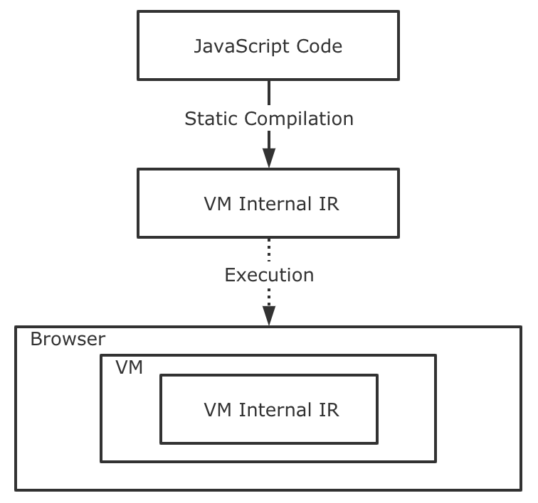
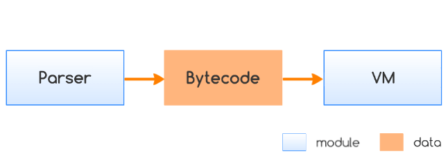

<!DOCTYPE html><html lang="en-us"><head><meta charset="UTF-8"><meta http-equiv="X-UA-Compatible" content="IE=edge,chrome=1"><title>浅谈前端 JavaScript 代码保护 | 曜彤.手记</title><meta name="description" content="本文主要介绍了可用于前端 JavaScript 代码保护的相关方案。这里所谓的“代码保护”其实可以被进一步理解为「如何在外部环境中尽量降低明文 JavaScript 代码的可读性，以让代码的执行细节成为黑盒？」这样一来，我们所提到的“代码保护”便可在某一程度上实现。"><meta name="generator" content="曜彤.手记"><meta name="author" content="于航(曜彤)"><meta name="keywords" content="博客, C++, C, Rust, Web, Java, IT, 编程, 开发, Android, Python, MySQL, 科技, 黑客, 技术, Javascript, 云, 大数据, 计算, 机器学习, AI, 人工智能, 创业, 产品, 公司, WebAssembly, Wasm"><meta name="HandheldFriendly" content="True"><meta name="MobileOptimized" content="320"><meta name="viewport" content="width=device-width,initial-scale=1.0,maximum-scale=1,user-scalable=0"><link rel="stylesheet" type="text/css" href="/styles/screen.css"><link rel="apple-touch-icon" sizes="57x57" href="/images/apple-touch-icon-57x57.jpg"><link rel="apple-touch-icon" sizes="60x60" href="/images/apple-touch-icon-60x60.jpg"><link rel="apple-touch-icon" sizes="72x72" href="/images/apple-touch-icon-72x72.jpg"><link rel="apple-touch-icon" sizes="76x76" href="/images/apple-touch-icon-76x76.jpg"><link rel="apple-touch-icon" sizes="114x114" href="/images/apple-touch-icon-114x114.jpg"><link rel="apple-touch-icon" sizes="120x120" href="/images/apple-touch-icon-120x120.jpg"><link rel="apple-touch-icon" sizes="144x144" href="/images/apple-touch-icon-144x144.jpg"><link rel="apple-touch-icon" sizes="152x152" href="/images/apple-touch-icon-152x152.jpg"><link rel="apple-touch-icon" sizes="196x196" href="/images/apple-touch-icon-196x196.jpg"><link rel="apple-touch-icon" sizes="310x310" href="/images/apple-touch-icon-310x310.jpg"><link href="/images/splash/iphone5_splash.png" media="(device-width: 320px) and (device-height: 568px) and (-webkit-device-pixel-ratio: 2)" rel="apple-touch-startup-image"><link href="/images/splash/iphone6_splash.png" media="(device-width: 375px) and (device-height: 667px) and (-webkit-device-pixel-ratio: 2)" rel="apple-touch-startup-image"><link href="/images/splash/iphoneplus_splash.png" media="(device-width: 621px) and (device-height: 1104px) and (-webkit-device-pixel-ratio: 3)" rel="apple-touch-startup-image"><link href="/images/splash/iphonex_splash.png" media="(device-width: 375px) and (device-height: 812px) and (-webkit-device-pixel-ratio: 3)" rel="apple-touch-startup-image"><link href="/images/splash/iphonexr_splash.png" media="(device-width: 414px) and (device-height: 896px) and (-webkit-device-pixel-ratio: 2)" rel="apple-touch-startup-image"><link href="/images/splash/iphonexsmax_splash.png" media="(device-width: 414px) and (device-height: 896px) and (-webkit-device-pixel-ratio: 3)" rel="apple-touch-startup-image"><link href="/images/splash/ipad_splash.png" media="(device-width: 768px) and (device-height: 1024px) and (-webkit-device-pixel-ratio: 2)" rel="apple-touch-startup-image"><link href="/images/splash/ipadpro1_splash.png" media="(device-width: 834px) and (device-height: 1112px) and (-webkit-device-pixel-ratio: 2)" rel="apple-touch-startup-image"><link href="/images/splash/ipadpro3_splash.png" media="(device-width: 834px) and (device-height: 1194px) and (-webkit-device-pixel-ratio: 2)" rel="apple-touch-startup-image"><link href="/images/splash/ipadpro2_splash.png" media="(device-width: 1024px) and (device-height: 1366px) and (-webkit-device-pixel-ratio: 2)" rel="apple-touch-startup-image"><link rel="icon" type="image/png" sizes="16x16" href="/images/favicon-16x16.png"><link rel="icon" type="image/png" sizes="32x32" href="/images/favicon-32x32.png"><link rel="icon" type="image/png" sizes="96x96" href="/images/favicon-96x96.png"><link rel="icon" type="image/png" sizes="128x128" href="/images/favicon-128.png"><link rel="icon" type="image/png" sizes="196x196" href="/images/favicon-196x196.png"><meta name="msapplication-TileColor" content="#FFFFFF"><meta name="msapplication-TileImage" content="mstile-144x144.png"><meta name="msapplication-square70x70logo" content="mstile-70x70.png"><meta name="msapplication-square150x150logo" content="mstile-150x150.png"><meta name="msapplication-wide310x150logo" content="mstile-310x150.png"><meta name="msapplication-square310x310logo" content="mstile-310x310.png"><meta name="msapplication-square310x310logo" content="mstile-310x310.png"><link rel="manifest" href="/manifest.webmanifest"><link rel="alternate" type="application/atom+xml" title="Atom 0.3" href="/atom.xml"><link rel="stylesheet" href="/css/prism-okaidia.css" type="text/css">
<link rel="stylesheet" href="/css/prism-line-numbers.css" type="text/css"></head><body itemscope itemtype="https://schema.org/WebPage"><div class="canvas-containter"><span>X</span></div><header itemscope itemtype="https://schema.org/WPHeader"><div class="logo"></div><h1 class="title"><a href="/" alt="曜彤.手记" title="曜彤.手记" itemprop="headline">曜彤.手记</a><a title="Atom 0.3" target="__blank" href="/atom.xml" class="rss"></a></h1><p itemprop="description" class="description">随记，关于互联网技术、产品与创业</p><nav itemscope itemtype="https://schema.org/SiteNavigationElement"><ul><li itemprop="name" class="menu-item"><a href="/ " alt="首页" title="首页" itemprop="url">首页</a></li><li itemprop="name" class="menu-item"><a href="/articles" alt="文章" title="文章" itemprop="url">文章</a></li><li itemprop="name" class="menu-item"><a href="/notes" alt="记录" title="记录" itemprop="url">记录</a></li><li itemprop="name" class="menu-item"><a href="/readings" alt="阅读" title="阅读" itemprop="url">阅读</a></li><li itemprop="name" class="menu-item"><a href="/tags" alt="标签" title="标签" itemprop="url">标签</a></li><li itemprop="name" class="menu-item"><a href="/author" alt="关于" title="关于" itemprop="url">关于</a></li></ul></nav><p class="meta-icp"><a target="_blank" href="https://beian.miit.gov.cn/"><span>吉 ICP 备10004938-2号</span></a></p><div class="space"></div></header><main itemscope itemtype="https://schema.org/Blog"><script src="https://shadow.elemecdn.com/npm/zoomage.js@latest/dist/zoomage.min.js" type="text/javascript"></script><script src="https://shadow.elemecdn.com/npm/axios@0.18.0/dist/axios.min.js" type="text/javascript"></script><script src="/scripts/post.js" type="text/javascript"></script><div class="touch-top"><span></span></div><article post-id="15b6c63d9790958c85c3378f0ff511bc" class="full"><h1 itemprop="headline" class="post-heading">浅谈前端 JavaScript 代码保护</h1><div class="article-meta"><span class="post-meta"><br>Created on<time itemprop="dateCreated" datetime="2019-04-10T08:58:34.000Z"> 2019 / 04 / 10, 16:58:34</time></span><span class="page-tag-anchor"><a href="/tags/JavaScript" itemprop="url">#JavaScript</a>&nbsp;&nbsp;<a href="/tags/代码保护" itemprop="url">#代码保护</a>&nbsp;&nbsp;</span></div><br><p>本文主要介绍了可用于前端 JavaScript 代码保护的相关方案。这里所谓的“代码保护”其实可以被进一步理解为「<strong>如何在外部环境中尽量降低明文 JavaScript 代码的可读性，以让代码的执行细节成为黑盒？</strong>」这样一来，我们所提到的“代码保护”便可在某一程度上实现。</p>
<p>总的来看，这些方法不外乎以下几种：</p>
<h2 id="代码混淆（Code-Obfuscation）"><a href="#代码混淆（Code-Obfuscation）" class="headerlink" title="代码混淆（Code Obfuscation）"></a>代码混淆（Code Obfuscation）</h2><p>第一种可以直接想到的方式便是使用“<strong>代码混淆</strong>”（由于两者一般同时进行，因此这里不特意区分“压缩”与“混淆”）。大多数最基本的代码混淆工具都可以压缩原始 ASCII 明文代码的体积，并将其中的诸如：变量名、函数名等，使用简短且毫无意义的标识符进行替换。以我们最常用的 “<em>Uglify<em>” 和 “</em>GCC</em> (Google Closure Compiler)” 为例，比如有下面这样一段未经处理的原始 ES5 源代码：</p>
<pre class="line-numbers language-javascript"><code class="language-javascript"><span class="token keyword">var</span> times <span class="token operator">=</span> <span class="token number">0.1</span> <span class="token operator">*</span> <span class="token number">8</span> <span class="token operator">+</span> <span class="token number">1</span><span class="token punctuation">;</span>
<span class="token keyword">function</span> <span class="token function">getExtra</span><span class="token punctuation">(</span>n<span class="token punctuation">)</span> <span class="token punctuation">{</span>
    <span class="token keyword">return</span> <span class="token punctuation">[</span><span class="token number">1</span><span class="token punctuation">,</span> <span class="token number">4</span><span class="token punctuation">,</span> <span class="token number">6</span><span class="token punctuation">]</span><span class="token punctuation">.</span><span class="token function">map</span><span class="token punctuation">(</span><span class="token keyword">function</span><span class="token punctuation">(</span>i<span class="token punctuation">)</span> <span class="token punctuation">{</span>
      <span class="token keyword">return</span> i <span class="token operator">*</span> n<span class="token punctuation">;</span>
  <span class="token punctuation">}</span><span class="token punctuation">)</span><span class="token punctuation">;</span>
<span class="token punctuation">}</span>
<span class="token keyword">var</span> arr <span class="token operator">=</span> <span class="token punctuation">[</span><span class="token number">8</span><span class="token punctuation">,</span> <span class="token number">94</span><span class="token punctuation">,</span> <span class="token number">15</span><span class="token punctuation">,</span> <span class="token number">88</span><span class="token punctuation">,</span> <span class="token number">55</span><span class="token punctuation">,</span> <span class="token number">76</span><span class="token punctuation">,</span> <span class="token number">21</span><span class="token punctuation">,</span> <span class="token number">39</span><span class="token punctuation">]</span><span class="token punctuation">;</span>
arr <span class="token operator">=</span> <span class="token function">getExtra</span><span class="token punctuation">(</span>times<span class="token punctuation">)</span><span class="token punctuation">.</span><span class="token function">concat</span><span class="token punctuation">(</span>arr<span class="token punctuation">.</span><span class="token function">map</span><span class="token punctuation">(</span><span class="token keyword">function</span><span class="token punctuation">(</span>item<span class="token punctuation">)</span> <span class="token punctuation">{</span>
  <span class="token keyword">return</span> item <span class="token operator">*</span> <span class="token number">2</span><span class="token punctuation">;</span>
<span class="token punctuation">}</span><span class="token punctuation">)</span><span class="token punctuation">)</span><span class="token punctuation">;</span>
<span class="token keyword">function</span> <span class="token function">sortarr</span><span class="token punctuation">(</span>arr<span class="token punctuation">)</span> <span class="token punctuation">{</span>
  <span class="token keyword">for</span><span class="token punctuation">(</span>i <span class="token operator">=</span> <span class="token number">0</span><span class="token punctuation">;</span> i <span class="token operator">&lt;</span> arr<span class="token punctuation">.</span>length <span class="token operator">-</span> <span class="token number">1</span><span class="token punctuation">;</span> i<span class="token operator">++</span><span class="token punctuation">)</span> <span class="token punctuation">{</span>
    <span class="token keyword">for</span><span class="token punctuation">(</span>j <span class="token operator">=</span> <span class="token number">0</span><span class="token punctuation">;</span> j <span class="token operator">&lt;</span> arr<span class="token punctuation">.</span>length <span class="token operator">-</span> <span class="token number">1</span> <span class="token operator">-</span> i<span class="token punctuation">;</span> j<span class="token operator">++</span><span class="token punctuation">)</span> <span class="token punctuation">{</span>
      <span class="token keyword">if</span><span class="token punctuation">(</span>arr<span class="token punctuation">[</span>j<span class="token punctuation">]</span> <span class="token operator">></span> arr<span class="token punctuation">[</span>j <span class="token operator">+</span> <span class="token number">1</span><span class="token punctuation">]</span><span class="token punctuation">)</span> <span class="token punctuation">{</span>
        <span class="token keyword">var</span> temp <span class="token operator">=</span> arr<span class="token punctuation">[</span>j<span class="token punctuation">]</span><span class="token punctuation">;</span>
        arr<span class="token punctuation">[</span>j<span class="token punctuation">]</span> <span class="token operator">=</span> arr<span class="token punctuation">[</span>j <span class="token operator">+</span> <span class="token number">1</span><span class="token punctuation">]</span><span class="token punctuation">;</span>
        arr<span class="token punctuation">[</span>j <span class="token operator">+</span> <span class="token number">1</span><span class="token punctuation">]</span> <span class="token operator">=</span> temp<span class="token punctuation">;</span>
      <span class="token punctuation">}</span>
    <span class="token punctuation">}</span>
  <span class="token punctuation">}</span>
  <span class="token keyword">return</span> arr<span class="token punctuation">;</span>
<span class="token punctuation">}</span>
console<span class="token punctuation">.</span><span class="token function">log</span><span class="token punctuation">(</span><span class="token function">sortarr</span><span class="token punctuation">(</span>arr<span class="token punctuation">)</span><span class="token punctuation">)</span><span class="token punctuation">;</span><span aria-hidden="true" class="line-numbers-rows"><span></span><span></span><span></span><span></span><span></span><span></span><span></span><span></span><span></span><span></span><span></span><span></span><span></span><span></span><span></span><span></span><span></span><span></span><span></span><span></span><span></span><span></span><span></span></span></code></pre>
<p>在经过 UglifyJS 的代码压缩和混淆处理后：</p>
<pre class="line-numbers language-javascript"><code class="language-javascript"><span class="token keyword">var</span> times<span class="token operator">=</span><span class="token number">1.8</span><span class="token punctuation">;</span><span class="token keyword">function</span> <span class="token function">getExtra</span><span class="token punctuation">(</span>r<span class="token punctuation">)</span><span class="token punctuation">{</span><span class="token keyword">return</span><span class="token punctuation">[</span><span class="token number">1</span><span class="token punctuation">,</span><span class="token number">4</span><span class="token punctuation">,</span><span class="token number">6</span><span class="token punctuation">]</span><span class="token punctuation">.</span><span class="token function">map</span><span class="token punctuation">(</span><span class="token keyword">function</span><span class="token punctuation">(</span>t<span class="token punctuation">)</span><span class="token punctuation">{</span><span class="token keyword">return</span> t<span class="token operator">*</span>r<span class="token punctuation">}</span><span class="token punctuation">)</span><span class="token punctuation">}</span><span class="token keyword">var</span> arr<span class="token operator">=</span><span class="token punctuation">[</span><span class="token number">8</span><span class="token punctuation">,</span><span class="token number">94</span><span class="token punctuation">,</span><span class="token number">15</span><span class="token punctuation">,</span><span class="token number">88</span><span class="token punctuation">,</span><span class="token number">55</span><span class="token punctuation">,</span><span class="token number">76</span><span class="token punctuation">,</span><span class="token number">21</span><span class="token punctuation">,</span><span class="token number">39</span><span class="token punctuation">]</span><span class="token punctuation">;</span><span class="token keyword">function</span> <span class="token function">sortarr</span><span class="token punctuation">(</span>r<span class="token punctuation">)</span><span class="token punctuation">{</span><span class="token keyword">for</span><span class="token punctuation">(</span>i<span class="token operator">=</span><span class="token number">0</span><span class="token punctuation">;</span>i<span class="token operator">&lt;</span>r<span class="token punctuation">.</span>length<span class="token number">-1</span><span class="token punctuation">;</span>i<span class="token operator">++</span><span class="token punctuation">)</span><span class="token keyword">for</span><span class="token punctuation">(</span>j<span class="token operator">=</span><span class="token number">0</span><span class="token punctuation">;</span>j<span class="token operator">&lt;</span>r<span class="token punctuation">.</span>length<span class="token number">-1</span><span class="token operator">-</span>i<span class="token punctuation">;</span>j<span class="token operator">++</span><span class="token punctuation">)</span><span class="token keyword">if</span><span class="token punctuation">(</span>r<span class="token punctuation">[</span>j<span class="token punctuation">]</span><span class="token operator">></span>r<span class="token punctuation">[</span>j<span class="token operator">+</span><span class="token number">1</span><span class="token punctuation">]</span><span class="token punctuation">)</span><span class="token punctuation">{</span><span class="token keyword">var</span> t<span class="token operator">=</span>r<span class="token punctuation">[</span>j<span class="token punctuation">]</span><span class="token punctuation">;</span>r<span class="token punctuation">[</span>j<span class="token punctuation">]</span><span class="token operator">=</span>r<span class="token punctuation">[</span>j<span class="token operator">+</span><span class="token number">1</span><span class="token punctuation">]</span><span class="token punctuation">,</span>r<span class="token punctuation">[</span>j<span class="token operator">+</span><span class="token number">1</span><span class="token punctuation">]</span><span class="token operator">=</span>t<span class="token punctuation">}</span><span class="token keyword">return</span> r<span class="token punctuation">}</span>arr<span class="token operator">=</span><span class="token function">getExtra</span><span class="token punctuation">(</span>times<span class="token punctuation">)</span><span class="token punctuation">.</span><span class="token function">concat</span><span class="token punctuation">(</span>arr<span class="token punctuation">.</span><span class="token function">map</span><span class="token punctuation">(</span><span class="token keyword">function</span><span class="token punctuation">(</span>r<span class="token punctuation">)</span><span class="token punctuation">{</span><span class="token keyword">return</span> <span class="token number">2</span><span class="token operator">*</span>r<span class="token punctuation">}</span><span class="token punctuation">)</span><span class="token punctuation">)</span><span class="token punctuation">,</span>console<span class="token punctuation">.</span><span class="token function">log</span><span class="token punctuation">(</span><span class="token function">sortarr</span><span class="token punctuation">(</span>arr<span class="token punctuation">)</span><span class="token punctuation">)</span><span class="token punctuation">;</span><span aria-hidden="true" class="line-numbers-rows"><span></span></span></code></pre>
<p>在经过 GCC 的代码压缩和混淆处理后：</p>
<pre class="line-numbers language-javascript"><code class="language-javascript"><span class="token keyword">var</span> b<span class="token operator">=</span><span class="token punctuation">[</span><span class="token number">8</span><span class="token punctuation">,</span><span class="token number">94</span><span class="token punctuation">,</span><span class="token number">15</span><span class="token punctuation">,</span><span class="token number">88</span><span class="token punctuation">,</span><span class="token number">55</span><span class="token punctuation">,</span><span class="token number">76</span><span class="token punctuation">,</span><span class="token number">21</span><span class="token punctuation">,</span><span class="token number">39</span><span class="token punctuation">]</span><span class="token punctuation">;</span>b<span class="token operator">=</span><span class="token keyword">function</span><span class="token punctuation">(</span>a<span class="token punctuation">)</span><span class="token punctuation">{</span><span class="token keyword">return</span><span class="token punctuation">[</span><span class="token number">1</span><span class="token punctuation">,</span><span class="token number">4</span><span class="token punctuation">,</span><span class="token number">6</span><span class="token punctuation">]</span><span class="token punctuation">.</span><span class="token function">map</span><span class="token punctuation">(</span><span class="token keyword">function</span><span class="token punctuation">(</span>c<span class="token punctuation">)</span><span class="token punctuation">{</span><span class="token keyword">return</span> c<span class="token operator">*</span>a<span class="token punctuation">}</span><span class="token punctuation">)</span><span class="token punctuation">}</span><span class="token punctuation">(</span><span class="token number">1.8</span><span class="token punctuation">)</span><span class="token punctuation">.</span><span class="token function">concat</span><span class="token punctuation">(</span>b<span class="token punctuation">.</span><span class="token function">map</span><span class="token punctuation">(</span><span class="token keyword">function</span><span class="token punctuation">(</span>a<span class="token punctuation">)</span><span class="token punctuation">{</span><span class="token keyword">return</span> <span class="token number">2</span><span class="token operator">*</span>a<span class="token punctuation">}</span><span class="token punctuation">)</span><span class="token punctuation">)</span><span class="token punctuation">;</span>console<span class="token punctuation">.</span><span class="token function">log</span><span class="token punctuation">(</span><span class="token keyword">function</span><span class="token punctuation">(</span>a<span class="token punctuation">)</span><span class="token punctuation">{</span><span class="token keyword">for</span><span class="token punctuation">(</span>i<span class="token operator">=</span><span class="token number">0</span><span class="token punctuation">;</span>i<span class="token operator">&lt;</span>a<span class="token punctuation">.</span>length<span class="token number">-1</span><span class="token punctuation">;</span>i<span class="token operator">++</span><span class="token punctuation">)</span><span class="token keyword">for</span><span class="token punctuation">(</span>j<span class="token operator">=</span><span class="token number">0</span><span class="token punctuation">;</span>j<span class="token operator">&lt;</span>a<span class="token punctuation">.</span>length<span class="token number">-1</span><span class="token operator">-</span>i<span class="token punctuation">;</span>j<span class="token operator">++</span><span class="token punctuation">)</span><span class="token keyword">if</span><span class="token punctuation">(</span>a<span class="token punctuation">[</span>j<span class="token punctuation">]</span><span class="token operator">></span>a<span class="token punctuation">[</span>j<span class="token operator">+</span><span class="token number">1</span><span class="token punctuation">]</span><span class="token punctuation">)</span><span class="token punctuation">{</span><span class="token keyword">var</span> c<span class="token operator">=</span>a<span class="token punctuation">[</span>j<span class="token punctuation">]</span><span class="token punctuation">;</span>a<span class="token punctuation">[</span>j<span class="token punctuation">]</span><span class="token operator">=</span>a<span class="token punctuation">[</span>j<span class="token operator">+</span><span class="token number">1</span><span class="token punctuation">]</span><span class="token punctuation">;</span>a<span class="token punctuation">[</span>j<span class="token operator">+</span><span class="token number">1</span><span class="token punctuation">]</span><span class="token operator">=</span>c<span class="token punctuation">}</span><span class="token keyword">return</span> a<span class="token punctuation">}</span><span class="token punctuation">(</span>b<span class="token punctuation">)</span><span class="token punctuation">)</span><span class="token punctuation">;</span><span aria-hidden="true" class="line-numbers-rows"><span></span></span></code></pre>
<p>对比上述两种工具的代码混淆压缩产物可以看到，UglifyJS 不会对原始代码进行“重写”，所有的混淆压缩工作都是在“<strong>保证原有代码结构不变</strong>”这个基础上进行的。而 GCC 对代码的混淆压缩处理则更接近于“编译器”，除了对常见的变量名和函数名进行混淆替换外，还使用了诸多 DCE 优化手段，比如对常量表达式进行提前求值（0.1 * 8 + 1）、通过 “<em>inlining</em>” 减少中间变量的使用等等。</p>
<p>借助 UglifyJS，我们也可以编写自己的源代码处理程序。比如我们可以首先使用 <code>UglifyJS.parse</code> 将一段 JavaScript 代码转换成其对应的 AST 形式，然后再通过 <code>UglifyJS.Compressor</code> 等方法对这些 AST 进行转换。最后再通过 <code>print_to_string</code> 方法，可以将处理后的 AST 结构转换成相应的 ASCII 明文代码形式。<em>UglifyJS.Compressor</em> 的本质是一个 “TreeTransformer” 类型，其内部已经封装好了众多常用的代码优化方法，而通过对 <code>UglifyJS.TreeTransformer</code> 进行适当的封装，我们也可以编写自己的代码优化器。如下所示的简单代码便实现了一个支持“常量传播”与“常量折叠”的 UglifyJS 转换器。</p>
<pre class="line-numbers language-javascript"><code class="language-javascript"><span class="token keyword">const</span> UglifyJS <span class="token operator">=</span> <span class="token function">require</span><span class="token punctuation">(</span><span class="token string">'uglify-js'</span><span class="token punctuation">)</span><span class="token punctuation">;</span>

<span class="token keyword">var</span> symbolTable <span class="token operator">=</span> <span class="token punctuation">{</span><span class="token punctuation">}</span><span class="token punctuation">;</span>
<span class="token keyword">var</span> binaryOperations <span class="token operator">=</span> <span class="token punctuation">{</span>
  <span class="token string">"+"</span><span class="token punctuation">:</span> <span class="token punctuation">(</span>x<span class="token punctuation">,</span> y<span class="token punctuation">)</span> <span class="token operator">=</span><span class="token operator">></span> x <span class="token operator">+</span> y<span class="token punctuation">,</span>
  <span class="token string">"-"</span><span class="token punctuation">:</span> <span class="token punctuation">(</span>x<span class="token punctuation">,</span> y<span class="token punctuation">)</span> <span class="token operator">=</span><span class="token operator">></span> x <span class="token operator">-</span> y<span class="token punctuation">,</span>
  <span class="token string">"*"</span><span class="token punctuation">:</span> <span class="token punctuation">(</span>x<span class="token punctuation">,</span> y<span class="token punctuation">)</span> <span class="token operator">=</span><span class="token operator">></span> x <span class="token operator">*</span> y
<span class="token punctuation">}</span>
<span class="token keyword">var</span> constexpr <span class="token operator">=</span> <span class="token keyword">new</span> <span class="token class-name">UglifyJS<span class="token punctuation">.</span>TreeTransformer</span><span class="token punctuation">(</span><span class="token keyword">null</span><span class="token punctuation">,</span> <span class="token keyword">function</span><span class="token punctuation">(</span>node<span class="token punctuation">)</span> <span class="token punctuation">{</span>
  <span class="token keyword">if</span> <span class="token punctuation">(</span>node <span class="token keyword">instanceof</span> <span class="token class-name">UglifyJS<span class="token punctuation">.</span>AST_Binary</span><span class="token punctuation">)</span> <span class="token punctuation">{</span>
    <span class="token keyword">if</span> <span class="token punctuation">(</span>Number<span class="token punctuation">.</span><span class="token function">isInteger</span><span class="token punctuation">(</span>node<span class="token punctuation">.</span>left<span class="token punctuation">.</span>value<span class="token punctuation">)</span> <span class="token operator">&amp;&amp;</span> Number<span class="token punctuation">.</span><span class="token function">isInteger</span><span class="token punctuation">(</span>node<span class="token punctuation">.</span>right<span class="token punctuation">.</span>value<span class="token punctuation">)</span><span class="token punctuation">)</span> <span class="token punctuation">{</span>
      <span class="token keyword">return</span> <span class="token keyword">new</span> <span class="token class-name">UglifyJS<span class="token punctuation">.</span>AST_Number</span><span class="token punctuation">(</span><span class="token punctuation">{</span>
        value<span class="token punctuation">:</span> binaryOperations<span class="token punctuation">[</span>node<span class="token punctuation">.</span>operator<span class="token punctuation">]</span><span class="token punctuation">.</span><span class="token function">call</span><span class="token punctuation">(</span><span class="token keyword">this</span><span class="token punctuation">,</span> 
          <span class="token function">Number</span><span class="token punctuation">(</span>node<span class="token punctuation">.</span>left<span class="token punctuation">.</span>value<span class="token punctuation">)</span><span class="token punctuation">,</span> 
          <span class="token function">Number</span><span class="token punctuation">(</span>node<span class="token punctuation">.</span>right<span class="token punctuation">.</span>value<span class="token punctuation">)</span><span class="token punctuation">)</span>
      <span class="token punctuation">}</span><span class="token punctuation">)</span><span class="token punctuation">;</span>
    <span class="token punctuation">}</span> <span class="token keyword">else</span> <span class="token punctuation">{</span>
      <span class="token keyword">return</span> <span class="token keyword">new</span> <span class="token class-name">UglifyJS<span class="token punctuation">.</span>AST_Number</span><span class="token punctuation">(</span><span class="token punctuation">{</span>
        value<span class="token punctuation">:</span> binaryOperations<span class="token punctuation">[</span>node<span class="token punctuation">.</span>operator<span class="token punctuation">]</span><span class="token punctuation">.</span><span class="token function">call</span><span class="token punctuation">(</span><span class="token keyword">this</span><span class="token punctuation">,</span> 
          <span class="token function">Number</span><span class="token punctuation">(</span>symbolTable<span class="token punctuation">[</span>node<span class="token punctuation">.</span>left<span class="token punctuation">.</span>name<span class="token punctuation">]</span><span class="token punctuation">.</span>value<span class="token punctuation">)</span><span class="token punctuation">,</span> 
          <span class="token function">Number</span><span class="token punctuation">(</span>symbolTable<span class="token punctuation">[</span>node<span class="token punctuation">.</span>right<span class="token punctuation">.</span>name<span class="token punctuation">]</span><span class="token punctuation">.</span>value<span class="token punctuation">)</span><span class="token punctuation">)</span>
      <span class="token punctuation">}</span><span class="token punctuation">)</span>
    <span class="token punctuation">}</span>
  <span class="token punctuation">}</span>

  <span class="token keyword">if</span> <span class="token punctuation">(</span>node <span class="token keyword">instanceof</span> <span class="token class-name">UglifyJS<span class="token punctuation">.</span>AST_VarDef</span><span class="token punctuation">)</span> <span class="token punctuation">{</span>
    symbolTable<span class="token punctuation">[</span>node<span class="token punctuation">.</span>name<span class="token punctuation">.</span>name<span class="token punctuation">]</span> <span class="token operator">=</span> node<span class="token punctuation">.</span>value<span class="token punctuation">;</span>
  <span class="token punctuation">}</span>
<span class="token punctuation">}</span><span class="token punctuation">)</span><span class="token punctuation">;</span>

<span class="token keyword">var</span> ast <span class="token operator">=</span> UglifyJS<span class="token punctuation">.</span><span class="token function">parse</span><span class="token punctuation">(</span><span class="token template-string"><span class="token string">`
  var x = 10 * 2 + 6;
  var y = 4 - 1 * 100;
  console.log(x + y);
`</span></span><span class="token punctuation">)</span><span class="token punctuation">;</span>

<span class="token comment" spellcheck="true">// transform and print.</span>
ast<span class="token punctuation">.</span><span class="token function">transform</span><span class="token punctuation">(</span>constexpr<span class="token punctuation">)</span><span class="token punctuation">;</span>
console<span class="token punctuation">.</span><span class="token function">log</span><span class="token punctuation">(</span>ast<span class="token punctuation">.</span><span class="token function">print_to_string</span><span class="token punctuation">(</span><span class="token punctuation">)</span><span class="token punctuation">)</span><span class="token punctuation">;</span>

<span class="token comment" spellcheck="true">// output: "var x=26;var y=-96;console.log(-70);".</span><span aria-hidden="true" class="line-numbers-rows"><span></span><span></span><span></span><span></span><span></span><span></span><span></span><span></span><span></span><span></span><span></span><span></span><span></span><span></span><span></span><span></span><span></span><span></span><span></span><span></span><span></span><span></span><span></span><span></span><span></span><span></span><span></span><span></span><span></span><span></span><span></span><span></span><span></span><span></span><span></span><span></span><span></span><span></span><span></span><span></span><span></span></span></code></pre>
<p>这里我们通过识别特定的 Uglify AST 节点类型（<em>UglifyJS.AST_Binary</em> / <em>UglifyJS.AST_VarDef</em>）来达到对代码进行精准处理的目的。可以看到，变量 <code>x</code> 和 <code>y</code> 的值在代码处理过程中被提前计算。不仅如此，其作为变量的值还被“传递”到了表达式 <code>x + y</code> 中，此时如果能够再结合简单的 DCE 策略便可完成最初级的代码优化效果。类似的，通过 Babel 的 <a href="https://www.npmjs.com/package/@babel/traverse" target="_blank" rel="noopener"><code>@babel/traverse</code></a> 插件，我们也可以实现同样的效果，其基本原理也大同小异。</p>
<p>对于经由 UglifyJS 和 GCC 处理后的 JavaScript 明文代码，我们尚能清楚地了解其大致的执行逻辑，相对只是缺少了有意义的变量名称。而对于某些更加激进（aggressive）的 JavaScript 混淆工具来说，经由它们处理后的明文代码已基本丧失了可读性。比如本文开头的 JavaScript 代码在经由 “<strong><a href="https://github.com/javascript-obfuscator/javascript-obfuscator" target="_blank" rel="noopener">javascript-obfuscator</a></strong>” 的代码混淆功能处理后，我们可以得到以下结果。可以看到，这部分代码已基本丧失可读性。</p>
<pre class="line-numbers language-javascript"><code class="language-javascript"><span class="token keyword">var</span> _0x4714<span class="token operator">=</span><span class="token punctuation">[</span><span class="token string">'39DeNKvr'</span><span class="token punctuation">,</span><span class="token string">'173449MpzOjv'</span><span class="token punctuation">,</span><span class="token string">'1FUezYv'</span><span class="token punctuation">,</span><span class="token string">'length'</span><span class="token punctuation">,</span><span class="token string">'77240kHoOnt'</span><span class="token punctuation">,</span><span class="token string">'324641yufFzw'</span><span class="token punctuation">,</span><span class="token string">'map'</span><span class="token punctuation">,</span><span class="token string">'745249sbRRYu'</span><span class="token punctuation">,</span><span class="token string">'533373WaZCzc'</span><span class="token punctuation">,</span><span class="token string">'1CYDDFZ'</span><span class="token punctuation">,</span><span class="token string">'6jccpjJ'</span><span class="token punctuation">,</span><span class="token string">'5927MoQMzj'</span><span class="token punctuation">,</span><span class="token string">'739909CIgkUB'</span><span class="token punctuation">]</span><span class="token punctuation">;</span><span class="token keyword">var</span> _0x57f9bd<span class="token operator">=</span>_0x1abc<span class="token punctuation">;</span><span class="token punctuation">(</span><span class="token keyword">function</span><span class="token punctuation">(</span>_0x31c03b<span class="token punctuation">,</span>_0x2c74b3<span class="token punctuation">)</span><span class="token punctuation">{</span><span class="token keyword">var</span> _0x535fd3<span class="token operator">=</span>_0x1abc<span class="token punctuation">;</span><span class="token keyword">while</span><span class="token punctuation">(</span><span class="token operator">!</span><span class="token operator">!</span><span class="token punctuation">[</span><span class="token punctuation">]</span><span class="token punctuation">)</span><span class="token punctuation">{</span><span class="token keyword">try</span><span class="token punctuation">{</span><span class="token keyword">var</span> _0x323f9f<span class="token operator">=</span><span class="token function">parseInt</span><span class="token punctuation">(</span><span class="token function">_0x535fd3</span><span class="token punctuation">(</span><span class="token number">0x10b</span><span class="token punctuation">)</span><span class="token punctuation">)</span><span class="token operator">*</span><span class="token function">parseInt</span><span class="token punctuation">(</span><span class="token function">_0x535fd3</span><span class="token punctuation">(</span><span class="token number">0x109</span><span class="token punctuation">)</span><span class="token punctuation">)</span><span class="token operator">+</span><span class="token function">parseInt</span><span class="token punctuation">(</span><span class="token function">_0x535fd3</span><span class="token punctuation">(</span><span class="token number">0x110</span><span class="token punctuation">)</span><span class="token punctuation">)</span><span class="token operator">+</span><span class="token operator">-</span><span class="token function">parseInt</span><span class="token punctuation">(</span><span class="token function">_0x535fd3</span><span class="token punctuation">(</span><span class="token number">0x10f</span><span class="token punctuation">)</span><span class="token punctuation">)</span><span class="token operator">*</span><span class="token function">parseInt</span><span class="token punctuation">(</span><span class="token function">_0x535fd3</span><span class="token punctuation">(</span><span class="token number">0x108</span><span class="token punctuation">)</span><span class="token punctuation">)</span><span class="token operator">+</span><span class="token function">parseInt</span><span class="token punctuation">(</span><span class="token function">_0x535fd3</span><span class="token punctuation">(</span><span class="token number">0x113</span><span class="token punctuation">)</span><span class="token punctuation">)</span><span class="token operator">+</span><span class="token function">parseInt</span><span class="token punctuation">(</span><span class="token function">_0x535fd3</span><span class="token punctuation">(</span><span class="token number">0x112</span><span class="token punctuation">)</span><span class="token punctuation">)</span><span class="token operator">*</span><span class="token operator">-</span><span class="token function">parseInt</span><span class="token punctuation">(</span><span class="token function">_0x535fd3</span><span class="token punctuation">(</span><span class="token number">0x114</span><span class="token punctuation">)</span><span class="token punctuation">)</span><span class="token operator">+</span><span class="token operator">-</span><span class="token function">parseInt</span><span class="token punctuation">(</span><span class="token function">_0x535fd3</span><span class="token punctuation">(</span><span class="token number">0x10c</span><span class="token punctuation">)</span><span class="token punctuation">)</span><span class="token operator">+</span><span class="token function">parseInt</span><span class="token punctuation">(</span><span class="token function">_0x535fd3</span><span class="token punctuation">(</span><span class="token number">0x10d</span><span class="token punctuation">)</span><span class="token punctuation">)</span><span class="token operator">*</span><span class="token function">parseInt</span><span class="token punctuation">(</span><span class="token function">_0x535fd3</span><span class="token punctuation">(</span><span class="token number">0x10a</span><span class="token punctuation">)</span><span class="token punctuation">)</span><span class="token punctuation">;</span><span class="token keyword">if</span><span class="token punctuation">(</span>_0x323f9f<span class="token operator">===</span>_0x2c74b3<span class="token punctuation">)</span><span class="token keyword">break</span><span class="token punctuation">;</span><span class="token keyword">else</span> _0x31c03b<span class="token punctuation">[</span><span class="token string">'push'</span><span class="token punctuation">]</span><span class="token punctuation">(</span>_0x31c03b<span class="token punctuation">[</span><span class="token string">'shift'</span><span class="token punctuation">]</span><span class="token punctuation">(</span><span class="token punctuation">)</span><span class="token punctuation">)</span><span class="token punctuation">;</span><span class="token punctuation">}</span><span class="token keyword">catch</span><span class="token punctuation">(</span>_0x375cd8<span class="token punctuation">)</span><span class="token punctuation">{</span>_0x31c03b<span class="token punctuation">[</span><span class="token string">'push'</span><span class="token punctuation">]</span><span class="token punctuation">(</span>_0x31c03b<span class="token punctuation">[</span><span class="token string">'shift'</span><span class="token punctuation">]</span><span class="token punctuation">(</span><span class="token punctuation">)</span><span class="token punctuation">)</span><span class="token punctuation">;</span><span class="token punctuation">}</span><span class="token punctuation">}</span><span class="token punctuation">}</span><span class="token punctuation">(</span>_0x4714<span class="token punctuation">,</span><span class="token number">0x6d1da</span><span class="token punctuation">)</span><span class="token punctuation">)</span><span class="token punctuation">;</span><span class="token keyword">var</span> times<span class="token operator">=</span><span class="token number">0.1</span><span class="token operator">*</span><span class="token number">0x8</span><span class="token operator">+</span><span class="token number">0x1</span><span class="token punctuation">;</span><span class="token keyword">function</span> <span class="token function">getExtra</span><span class="token punctuation">(</span>_0x5cf174<span class="token punctuation">)</span><span class="token punctuation">{</span><span class="token keyword">var</span> _0x259155<span class="token operator">=</span>_0x1abc<span class="token punctuation">;</span><span class="token keyword">return</span><span class="token punctuation">[</span><span class="token number">0x1</span><span class="token punctuation">,</span><span class="token number">0x4</span><span class="token punctuation">,</span><span class="token number">0x6</span><span class="token punctuation">]</span><span class="token punctuation">[</span><span class="token function">_0x259155</span><span class="token punctuation">(</span><span class="token number">0x111</span><span class="token punctuation">)</span><span class="token punctuation">]</span><span class="token punctuation">(</span><span class="token keyword">function</span><span class="token punctuation">(</span>_0x40abb6<span class="token punctuation">)</span><span class="token punctuation">{</span><span class="token keyword">return</span> _0x40abb6<span class="token operator">*</span>_0x5cf174<span class="token punctuation">;</span><span class="token punctuation">}</span><span class="token punctuation">)</span><span class="token punctuation">;</span><span class="token punctuation">}</span><span class="token keyword">var</span> arr<span class="token operator">=</span><span class="token punctuation">[</span><span class="token number">0x8</span><span class="token punctuation">,</span><span class="token number">0x5e</span><span class="token punctuation">,</span><span class="token number">0xf</span><span class="token punctuation">,</span><span class="token number">0x58</span><span class="token punctuation">,</span><span class="token number">0x37</span><span class="token punctuation">,</span><span class="token number">0x4c</span><span class="token punctuation">,</span><span class="token number">0x15</span><span class="token punctuation">,</span><span class="token number">0x27</span><span class="token punctuation">]</span><span class="token punctuation">;</span>arr<span class="token operator">=</span><span class="token function">getExtra</span><span class="token punctuation">(</span>times<span class="token punctuation">)</span><span class="token punctuation">[</span><span class="token string">'concat'</span><span class="token punctuation">]</span><span class="token punctuation">(</span>arr<span class="token punctuation">[</span><span class="token function">_0x57f9bd</span><span class="token punctuation">(</span><span class="token number">0x111</span><span class="token punctuation">)</span><span class="token punctuation">]</span><span class="token punctuation">(</span><span class="token keyword">function</span><span class="token punctuation">(</span>_0x143e60<span class="token punctuation">)</span><span class="token punctuation">{</span><span class="token keyword">return</span> _0x143e60<span class="token operator">*</span><span class="token number">0x2</span><span class="token punctuation">;</span><span class="token punctuation">}</span><span class="token punctuation">)</span><span class="token punctuation">)</span><span class="token punctuation">;</span><span class="token keyword">function</span> <span class="token function">_0x1abc</span><span class="token punctuation">(</span>_0x1ea59c<span class="token punctuation">,</span>_0x39de2e<span class="token punctuation">)</span><span class="token punctuation">{</span>_0x1ea59c<span class="token operator">=</span>_0x1ea59c<span class="token number">-0x108</span><span class="token punctuation">;</span><span class="token keyword">var</span> _0x471491<span class="token operator">=</span>_0x4714<span class="token punctuation">[</span>_0x1ea59c<span class="token punctuation">]</span><span class="token punctuation">;</span><span class="token keyword">return</span> _0x471491<span class="token punctuation">;</span><span class="token punctuation">}</span><span class="token keyword">function</span> <span class="token function">sortarr</span><span class="token punctuation">(</span>_0x113e5e<span class="token punctuation">)</span><span class="token punctuation">{</span><span class="token keyword">var</span> _0x1d8273<span class="token operator">=</span>_0x57f9bd<span class="token punctuation">;</span><span class="token keyword">for</span><span class="token punctuation">(</span>i<span class="token operator">=</span><span class="token number">0x0</span><span class="token punctuation">;</span>i<span class="token operator">&lt;</span>_0x113e5e<span class="token punctuation">[</span><span class="token function">_0x1d8273</span><span class="token punctuation">(</span><span class="token number">0x10e</span><span class="token punctuation">)</span><span class="token punctuation">]</span><span class="token operator">-</span><span class="token number">0x1</span><span class="token punctuation">;</span>i<span class="token operator">++</span><span class="token punctuation">)</span><span class="token punctuation">{</span><span class="token keyword">for</span><span class="token punctuation">(</span>j<span class="token operator">=</span><span class="token number">0x0</span><span class="token punctuation">;</span>j<span class="token operator">&lt;</span>_0x113e5e<span class="token punctuation">[</span><span class="token string">'length'</span><span class="token punctuation">]</span><span class="token operator">-</span><span class="token number">0x1</span><span class="token operator">-</span>i<span class="token punctuation">;</span>j<span class="token operator">++</span><span class="token punctuation">)</span><span class="token punctuation">{</span><span class="token keyword">if</span><span class="token punctuation">(</span>_0x113e5e<span class="token punctuation">[</span>j<span class="token punctuation">]</span><span class="token operator">></span>_0x113e5e<span class="token punctuation">[</span>j<span class="token operator">+</span><span class="token number">0x1</span><span class="token punctuation">]</span><span class="token punctuation">)</span><span class="token punctuation">{</span><span class="token keyword">var</span> _0x594d3b<span class="token operator">=</span>_0x113e5e<span class="token punctuation">[</span>j<span class="token punctuation">]</span><span class="token punctuation">;</span>_0x113e5e<span class="token punctuation">[</span>j<span class="token punctuation">]</span><span class="token operator">=</span>_0x113e5e<span class="token punctuation">[</span>j<span class="token operator">+</span><span class="token number">0x1</span><span class="token punctuation">]</span><span class="token punctuation">,</span>_0x113e5e<span class="token punctuation">[</span>j<span class="token operator">+</span><span class="token number">0x1</span><span class="token punctuation">]</span><span class="token operator">=</span>_0x594d3b<span class="token punctuation">;</span><span class="token punctuation">}</span><span class="token punctuation">}</span><span class="token punctuation">}</span><span class="token keyword">return</span> _0x113e5e<span class="token punctuation">;</span><span class="token punctuation">}</span>console<span class="token punctuation">[</span><span class="token string">'log'</span><span class="token punctuation">]</span><span class="token punctuation">(</span><span class="token function">sortarr</span><span class="token punctuation">(</span>arr<span class="token punctuation">)</span><span class="token punctuation">)</span><span class="token punctuation">;</span><span aria-hidden="true" class="line-numbers-rows"><span></span></span></code></pre>
<p>对这些工具来说，它们不仅会对源代码进行“压缩”和“变量名替换”等基本处理，还会通过诸如“增加无效对象（使调用栈增加）”、“Control Flow Flattening（使控制流扁平化）” 等方式来使用户无法通过常规的浏览器调试工具查看程序的原始执行流程。相对的，由于增加了这些更加激进的代码处理逻辑，经过它们混淆处理后的代码，其执行效率会相对地下降 15% 至 80%，具体依使用的混淆策略不同而有所差异。</p>
<h2 id="沙盒（Sandboxing）"><a href="#沙盒（Sandboxing）" class="headerlink" title="沙盒（Sandboxing）"></a>沙盒（Sandboxing）</h2><p>所谓“沙盒”可以简单将其理解为运行在浏览器中的一个独立环境。我们的 JavaScript 代码将会以某种方式（可能并非以 ASCII 明文代码的方式）在沙盒环境中执行，而沙盒自身则承担了与浏览器（诸如 Web API）进行交互的任务。一个简单的基于沙盒的 JavaScript 代码保护服务的基本结构如下所示：</p>
<p></p>
<p>这里整个处理分为两个阶段：</p>
<ul>
<li><strong>第一阶段</strong>：先将 ASCII 明文的 JavaScript 代码转换为基于特定 JavaScript 引擎（VM）的 OpCode 代码，这些二进制的 OpCode 代码会再通过诸如 Base64 等算法的处理进而转换为经过编码的明文 ASCII 字符串格式。相较于二进制的 OpCode 代码，这些经过 Based64 处理后的代码会有斤四分之一的体积增长；</li>
<li><strong>第二阶段</strong>：将上述经过编码的 ASCII 字符串连同对应的 JavaScript 引擎代码统一编译为对应的 ASM / WebAssembly 代码。当这些代码在网页中加载执行时，内嵌的 JavaScript 引擎便会直接解释执行硬编码在模块中的、经过编码处理的字符串 OpCode 代码。</li>
</ul>
<p>比如我们以下面这段 JavaScript 代码为例：</p>
<pre class="line-numbers language-javascript"><code class="language-javascript"><span class="token punctuation">[</span><span class="token number">1</span><span class="token punctuation">,</span> <span class="token number">2</span><span class="token punctuation">,</span> <span class="token number">3</span><span class="token punctuation">,</span> <span class="token number">5</span><span class="token punctuation">,</span> <span class="token number">6</span><span class="token punctuation">,</span> <span class="token number">7</span><span class="token punctuation">,</span> <span class="token number">8</span><span class="token punctuation">,</span> <span class="token number">9</span><span class="token punctuation">]</span><span class="token punctuation">.</span><span class="token function">map</span><span class="token punctuation">(</span><span class="token keyword">function</span><span class="token punctuation">(</span>i<span class="token punctuation">)</span> <span class="token punctuation">{</span>
  <span class="token keyword">return</span> i <span class="token operator">*</span> <span class="token number">2</span><span class="token punctuation">;</span>
<span class="token punctuation">}</span><span class="token punctuation">)</span><span class="token punctuation">.</span><span class="token function">reduce</span><span class="token punctuation">(</span><span class="token keyword">function</span><span class="token punctuation">(</span>p<span class="token punctuation">,</span> i<span class="token punctuation">)</span> <span class="token punctuation">{</span>
  <span class="token keyword">return</span> p <span class="token operator">+</span> i<span class="token punctuation">;</span>
<span class="token punctuation">}</span><span class="token punctuation">,</span> <span class="token number">0</span><span class="token punctuation">)</span><span class="token punctuation">;</span><span aria-hidden="true" class="line-numbers-rows"><span></span><span></span><span></span><span></span><span></span></span></code></pre>
<p>按照正常的 VM 执行流程，上述代码在执行后会返回计算结果 <code>82</code>。这里我们以 <a href="https://github.com/pando-project/jerryscript" target="_blank" rel="noopener">JerryScript</a> 这个开源的轻量级 JavaScript 引擎作为例子，第一步首先将上述 ASCII 形式的代码输入到该引擎中，然后便可获得对应该引擎中间状态的 ByteCode 字节码。</p>
<p></p>
<p>然后再将这些二进制的字节码通过 Base64 算法编码成对应的 ASCII 字符串形式。结果如下：</p>
<pre class="line-numbers language-text"><code class="language-text">WVJSSgAAABYAAAAAAAAAgAAAAAEAAAAYAAEACAAJAAEEAgAAAAAABwAAAGcAAABAAAAAWDIAMhwyAjIBMgUyBDIHMgY6CCAIwAIoAB0AAToARscDAAAAAAABAAMBAQAhAgIBAQAAACBFAQCPAAAAAAABAAICAQAhAgICAkUBAIlhbQADAAYAcHVkZXIAAGVjAAAAAAAAAAAAAAAAAAAAAAAAAAAAAAAAAAAAAAAAAAAAAAAAAAAAAAAAAAAAAAAAAAAAAAAAAAAAAAAAAAAAAAAAAAAAAAAAAAAAAAAAAAAAAAAAAAAAAAAAAAAAAAAAAAAAAAAAAAAAAAAAAAAAAAAAAAAAAAAAAAAAAAAAAAAAAAAAAAAAAAAAAAAAAAAAAAAAAAAAAAAAAAAAAAAAAAAAAAAAAAAAAAAAAAAAAAAAAAAAAAAAAAAAAAAAAAAAAAAAAAAAAAAAAAAAAAAAAAAAAAAAAAAAAAAAAAAAAAAAAAAAAAAAAAAAAAAAAAAAAAAAAAAAAAAAAAAAAAAAAAAAAAAAAAAAAAAAAAAAAAAAAAAAAAAAAAAAAAAAAAAAAAAAAAAAAAAAAAAAAAAAAAAAAAAAAAAAAAAAAAAAAAAAAAAAAAAAAAAAAAAAAAAAAAAAAAAAAAAAAAAAAAAAAAAAAAAAAAAAAAAAAAAAAAAAAAAAAAAAAAAAAAAAAAAAAAAAAAAAAAAAAAAAAAAAAAAAAAAAAAAAAAAAAAAAAAAAAAAAAAAAAAAAAAAAAAAAAAAAAAAAAAAAAAAAAAAAAAAAAAAAAAAAAAAAAAAAAAAAAAAAAAAAAAAAAAAAAAAAAAAAAAAAAAAAAAAAAAAAAAAAAAAAAAAAAAAAAAAAAAAAAAAAAAAAAAAAAAAAAAAAAAAAAAAAAAAAAAAAAAAAAAAAAAAAAAAAAAAAAAAAAAAAAAAAAAAAAAAAAAAAAAAAAAAAAAAAAAAAAAAAAAAAAAAAAAAAAAAAAAAAAAAAAAAAAAAAAAAAAAAAAAAAAAAAAAAAAAAAAAAAAAAAAAAAAAAAAAAAAAAAAAAAAAAAAAAAAAAAAAAAAAAAAAAAAAAAAAAAAAAAAAAAAAAAAAAAAAAAAAAAAAAAAAAAAAAAAAAAAAAAAAAAAAAAAAAAAAAAAAAAAAAAAAAAAAAAAAAAAAAAAAAAAAAAAAAAAAAAAAAAAAAAAAAAAAAAAAAAAAAAAAAAAAAAAAAAAAAAAAAAAAAAAAAAAAAAAAAAAAAAAAAAAAAAAAAAAAAAAAAAAAAAAAAAAAAAAAAAAAAAAAAAAAAAAAAAAAAAAAAAAAAAAAAAAAAAAAAAAAAAAAAAAAAAAAAAAAAAAAAAAAAAAAAAAA==<span aria-hidden="true" class="line-numbers-rows"><span></span></span></code></pre>
<p>按照我们的思路，这部分被编码后的 ASCII 字符串会作为“加密”后的源代码被硬编码到包含有 VM 引擎核心的 Wasm 模块中。当模块被加载时，VM 会通过相反的顺序解码这段字符串，并得到二进制格式的 ByteCode。然后再通过一起打包进来的 VM 核心执行这些中间状态的 ByteCode。这里我们上述提到的 ByteCode 实际上是以 JerryScript SnapShot 快照结构的形式存在于内存中的。最后这里给出上述 Demo 的主要部分源码，详细代码可以参考 <a href="https://github.com/Becavalier/Zero" target="_blank" rel="noopener">Github</a>：</p>
<pre class="line-numbers language-cpp"><code class="language-cpp"><span class="token macro property">#<span class="token directive keyword">include</span> <span class="token string">"jerryscript.h"</span></span>
<span class="token macro property">#<span class="token directive keyword">include</span> <span class="token string">"cppcodec/base64_rfc4648.hpp"</span></span>
<span class="token macro property">#<span class="token directive keyword">include</span> <span class="token string">&lt;iostream></span></span>
<span class="token macro property">#<span class="token directive keyword">include</span> <span class="token string">&lt;vector></span></span>

<span class="token macro property">#<span class="token directive keyword">define</span> BUFFER_SIZE 256</span>

<span class="token macro property">#<span class="token directive keyword">ifdef</span> WASM</span>
<span class="token macro property">#<span class="token directive keyword">include</span> <span class="token string">"emscripten.h"</span></span>
<span class="token macro property">#<span class="token directive keyword">endif</span></span>


std<span class="token operator">::</span>string <span class="token function">encode_code</span><span class="token punctuation">(</span><span class="token keyword">const</span> jerry_char_t<span class="token operator">*</span><span class="token punctuation">,</span> size_t<span class="token punctuation">)</span><span class="token punctuation">;</span>

<span class="token keyword">const</span> <span class="token keyword">unsigned</span> <span class="token keyword">char</span><span class="token operator">*</span> <span class="token function">transferToUC</span><span class="token punctuation">(</span><span class="token keyword">const</span> uint32_t<span class="token operator">*</span> arr<span class="token punctuation">,</span> size_t length<span class="token punctuation">)</span> <span class="token punctuation">{</span>
  <span class="token keyword">auto</span> container <span class="token operator">=</span> std<span class="token operator">::</span>vector<span class="token operator">&lt;</span><span class="token keyword">unsigned</span> <span class="token keyword">char</span><span class="token operator">></span><span class="token punctuation">(</span><span class="token punctuation">)</span><span class="token punctuation">;</span>
  <span class="token keyword">for</span> <span class="token punctuation">(</span>size_t x <span class="token operator">=</span> <span class="token number">0</span><span class="token punctuation">;</span> x <span class="token operator">&lt;</span> length<span class="token punctuation">;</span> x<span class="token operator">++</span><span class="token punctuation">)</span> <span class="token punctuation">{</span>
    <span class="token keyword">auto</span> _t <span class="token operator">=</span> arr<span class="token punctuation">[</span>x<span class="token punctuation">]</span><span class="token punctuation">;</span>
    container<span class="token punctuation">.</span><span class="token function">push_back</span><span class="token punctuation">(</span>_t <span class="token operator">>></span> <span class="token number">24</span><span class="token punctuation">)</span><span class="token punctuation">;</span>
    container<span class="token punctuation">.</span><span class="token function">push_back</span><span class="token punctuation">(</span>_t <span class="token operator">>></span> <span class="token number">16</span><span class="token punctuation">)</span><span class="token punctuation">;</span>
    container<span class="token punctuation">.</span><span class="token function">push_back</span><span class="token punctuation">(</span>_t <span class="token operator">>></span> <span class="token number">8</span><span class="token punctuation">)</span><span class="token punctuation">;</span>
    container<span class="token punctuation">.</span><span class="token function">push_back</span><span class="token punctuation">(</span>_t<span class="token punctuation">)</span><span class="token punctuation">;</span>
  <span class="token punctuation">}</span>

  <span class="token keyword">return</span> <span class="token operator">&amp;</span>container<span class="token punctuation">[</span><span class="token number">0</span><span class="token punctuation">]</span><span class="token punctuation">;</span>
<span class="token punctuation">}</span>

std<span class="token operator">::</span>vector<span class="token operator">&lt;</span>uint32_t<span class="token operator">></span> <span class="token function">transferToU32</span><span class="token punctuation">(</span><span class="token keyword">const</span> uint8_t<span class="token operator">*</span> arr<span class="token punctuation">,</span> size_t length<span class="token punctuation">)</span> <span class="token punctuation">{</span>
  <span class="token keyword">auto</span> container <span class="token operator">=</span> std<span class="token operator">::</span>vector<span class="token operator">&lt;</span>uint32_t<span class="token operator">></span><span class="token punctuation">(</span><span class="token punctuation">)</span><span class="token punctuation">;</span>
  <span class="token keyword">for</span> <span class="token punctuation">(</span>size_t x <span class="token operator">=</span> <span class="token number">0</span><span class="token punctuation">;</span> x <span class="token operator">&lt;</span> length<span class="token punctuation">;</span> x<span class="token operator">++</span><span class="token punctuation">)</span> <span class="token punctuation">{</span>
    size_t index <span class="token operator">=</span> x <span class="token operator">*</span> <span class="token number">4</span><span class="token punctuation">;</span>
    uint32_t y <span class="token operator">=</span> <span class="token punctuation">(</span>arr<span class="token punctuation">[</span>index <span class="token operator">+</span> <span class="token number">0</span><span class="token punctuation">]</span> <span class="token operator">&lt;&lt;</span> <span class="token number">24</span><span class="token punctuation">)</span> <span class="token operator">|</span> <span class="token punctuation">(</span>arr<span class="token punctuation">[</span>index <span class="token operator">+</span> <span class="token number">1</span><span class="token punctuation">]</span> <span class="token operator">&lt;&lt;</span> <span class="token number">16</span><span class="token punctuation">)</span> <span class="token operator">|</span> <span class="token punctuation">(</span>arr<span class="token punctuation">[</span>index <span class="token operator">+</span> <span class="token number">2</span><span class="token punctuation">]</span> <span class="token operator">&lt;&lt;</span> <span class="token number">8</span><span class="token punctuation">)</span> <span class="token operator">|</span> arr<span class="token punctuation">[</span>index <span class="token operator">+</span> <span class="token number">3</span><span class="token punctuation">]</span><span class="token punctuation">;</span>
    container<span class="token punctuation">.</span><span class="token function">push_back</span><span class="token punctuation">(</span>y<span class="token punctuation">)</span><span class="token punctuation">;</span>
  <span class="token punctuation">}</span>

  <span class="token keyword">return</span> container<span class="token punctuation">;</span>
<span class="token punctuation">}</span>

<span class="token keyword">int</span> <span class="token function">main</span> <span class="token punctuation">(</span><span class="token keyword">int</span> argc<span class="token punctuation">,</span> <span class="token keyword">char</span><span class="token operator">*</span><span class="token operator">*</span> argv<span class="token punctuation">)</span> <span class="token punctuation">{</span>
  <span class="token keyword">const</span> jerry_char_t script_to_snapshot<span class="token punctuation">[</span><span class="token punctuation">]</span> <span class="token operator">=</span> u8R"<span class="token punctuation">(</span>
    <span class="token punctuation">[</span><span class="token number">1</span><span class="token punctuation">,</span> <span class="token number">2</span><span class="token punctuation">,</span> <span class="token number">3</span><span class="token punctuation">,</span> <span class="token number">5</span><span class="token punctuation">,</span> <span class="token number">6</span><span class="token punctuation">,</span> <span class="token number">7</span><span class="token punctuation">,</span> <span class="token number">8</span><span class="token punctuation">,</span> <span class="token number">9</span><span class="token punctuation">]</span><span class="token punctuation">.</span><span class="token function">map</span><span class="token punctuation">(</span><span class="token function">function</span><span class="token punctuation">(</span>i<span class="token punctuation">)</span> <span class="token punctuation">{</span>
      <span class="token keyword">return</span> i <span class="token operator">*</span> <span class="token number">2</span><span class="token punctuation">;</span>
    <span class="token punctuation">}</span><span class="token punctuation">)</span><span class="token punctuation">.</span><span class="token function">reduce</span><span class="token punctuation">(</span><span class="token function">function</span><span class="token punctuation">(</span>p<span class="token punctuation">,</span> i<span class="token punctuation">)</span> <span class="token punctuation">{</span>
      <span class="token keyword">return</span> p <span class="token operator">+</span> i<span class="token punctuation">;</span>
    <span class="token punctuation">}</span><span class="token punctuation">,</span> <span class="token number">0</span><span class="token punctuation">)</span><span class="token punctuation">;</span>
  <span class="token punctuation">)</span>"<span class="token punctuation">;</span>

  std<span class="token operator">::</span>cout <span class="token operator">&lt;&lt;</span> <span class="token function">encode_code</span><span class="token punctuation">(</span>script_to_snapshot<span class="token punctuation">,</span> <span class="token keyword">sizeof</span><span class="token punctuation">(</span>script_to_snapshot<span class="token punctuation">)</span><span class="token punctuation">)</span> <span class="token operator">&lt;&lt;</span> std<span class="token operator">::</span>endl<span class="token punctuation">;</span>

  <span class="token keyword">return</span> <span class="token number">0</span><span class="token punctuation">;</span>
<span class="token punctuation">}</span>

std<span class="token operator">::</span>string <span class="token function">encode_code</span><span class="token punctuation">(</span><span class="token keyword">const</span> jerry_char_t script_to_snapshot<span class="token punctuation">[</span><span class="token punctuation">]</span><span class="token punctuation">,</span> size_t length<span class="token punctuation">)</span> <span class="token punctuation">{</span>
  <span class="token keyword">using</span> base64 <span class="token operator">=</span> cppcodec<span class="token operator">::</span>base64_rfc4648<span class="token punctuation">;</span>

  <span class="token comment" spellcheck="true">// initialize engine;</span>
  <span class="token function">jerry_init</span><span class="token punctuation">(</span>JERRY_INIT_SHOW_OPCODES<span class="token punctuation">)</span><span class="token punctuation">;</span>

  jerry_feature_t feature <span class="token operator">=</span> JERRY_FEATURE_SNAPSHOT_SAVE<span class="token punctuation">;</span>

  <span class="token keyword">if</span> <span class="token punctuation">(</span><span class="token function">jerry_is_feature_enabled</span><span class="token punctuation">(</span>feature<span class="token punctuation">)</span><span class="token punctuation">)</span> <span class="token punctuation">{</span>
    <span class="token keyword">static</span> uint32_t global_mode_snapshot_buffer<span class="token punctuation">[</span>BUFFER_SIZE<span class="token punctuation">]</span><span class="token punctuation">;</span>

    <span class="token comment" spellcheck="true">// generate snapshot;</span>
    jerry_value_t generate_result <span class="token operator">=</span> <span class="token function">jerry_generate_snapshot</span><span class="token punctuation">(</span>
      <span class="token constant">NULL</span><span class="token punctuation">,</span> 
      <span class="token number">0</span><span class="token punctuation">,</span>
      script_to_snapshot<span class="token punctuation">,</span>
      length <span class="token operator">-</span> <span class="token number">1</span><span class="token punctuation">,</span>
      <span class="token number">0</span><span class="token punctuation">,</span>
      global_mode_snapshot_buffer<span class="token punctuation">,</span>
      <span class="token keyword">sizeof</span><span class="token punctuation">(</span>global_mode_snapshot_buffer<span class="token punctuation">)</span> <span class="token operator">/</span> <span class="token keyword">sizeof</span><span class="token punctuation">(</span>uint32_t<span class="token punctuation">)</span><span class="token punctuation">)</span><span class="token punctuation">;</span>

    <span class="token keyword">if</span> <span class="token punctuation">(</span><span class="token operator">!</span><span class="token punctuation">(</span><span class="token function">jerry_value_is_abort</span><span class="token punctuation">(</span>generate_result<span class="token punctuation">)</span> <span class="token operator">||</span> <span class="token function">jerry_value_is_error</span><span class="token punctuation">(</span>generate_result<span class="token punctuation">)</span><span class="token punctuation">)</span><span class="token punctuation">)</span> <span class="token punctuation">{</span>
      size_t snapshot_size <span class="token operator">=</span> <span class="token punctuation">(</span>size_t<span class="token punctuation">)</span> <span class="token function">jerry_get_number_value</span><span class="token punctuation">(</span>generate_result<span class="token punctuation">)</span><span class="token punctuation">;</span>

      std<span class="token operator">::</span>string encoded_snapshot <span class="token operator">=</span> base64<span class="token operator">::</span><span class="token function">encode</span><span class="token punctuation">(</span>
        <span class="token function">transferToUC</span><span class="token punctuation">(</span>global_mode_snapshot_buffer<span class="token punctuation">,</span> BUFFER_SIZE<span class="token punctuation">)</span><span class="token punctuation">,</span> BUFFER_SIZE <span class="token operator">*</span> <span class="token number">4</span><span class="token punctuation">)</span><span class="token punctuation">;</span>

      <span class="token function">jerry_release_value</span><span class="token punctuation">(</span>generate_result<span class="token punctuation">)</span><span class="token punctuation">;</span>
      <span class="token function">jerry_cleanup</span><span class="token punctuation">(</span><span class="token punctuation">)</span><span class="token punctuation">;</span>

      <span class="token comment" spellcheck="true">// encoded bytecode of the snapshot;</span>
      <span class="token keyword">return</span> encoded_snapshot<span class="token punctuation">;</span>
    <span class="token punctuation">}</span>
  <span class="token punctuation">}</span>
  <span class="token keyword">return</span> <span class="token string">"[EOF]"</span><span class="token punctuation">;</span>
<span class="token punctuation">}</span>

<span class="token keyword">void</span> <span class="token function">run_encoded_snapshot</span><span class="token punctuation">(</span>std<span class="token operator">::</span>string code<span class="token punctuation">,</span> size_t snapshot_size<span class="token punctuation">)</span> <span class="token punctuation">{</span>
  <span class="token keyword">using</span> base64 <span class="token operator">=</span> cppcodec<span class="token operator">::</span>base64_rfc4648<span class="token punctuation">;</span>

  <span class="token keyword">auto</span> result <span class="token operator">=</span> <span class="token function">transferToU32</span><span class="token punctuation">(</span>
    <span class="token operator">&amp;</span><span class="token punctuation">(</span>base64<span class="token operator">::</span><span class="token function">decode</span><span class="token punctuation">(</span>code<span class="token punctuation">)</span><span class="token punctuation">[</span><span class="token number">0</span><span class="token punctuation">]</span><span class="token punctuation">)</span><span class="token punctuation">,</span> 
    BUFFER_SIZE<span class="token punctuation">)</span><span class="token punctuation">;</span>

  uint32_t snapshot_decoded_buffer<span class="token punctuation">[</span>BUFFER_SIZE<span class="token punctuation">]</span><span class="token punctuation">;</span>
  <span class="token keyword">for</span> <span class="token punctuation">(</span><span class="token keyword">auto</span> x <span class="token operator">=</span> <span class="token number">0</span><span class="token punctuation">;</span> x <span class="token operator">&lt;</span> BUFFER_SIZE<span class="token punctuation">;</span> x<span class="token operator">++</span><span class="token punctuation">)</span> <span class="token punctuation">{</span>
    snapshot_decoded_buffer<span class="token punctuation">[</span>x<span class="token punctuation">]</span> <span class="token operator">=</span> result<span class="token punctuation">.</span><span class="token function">at</span><span class="token punctuation">(</span>x<span class="token punctuation">)</span><span class="token punctuation">;</span>
  <span class="token punctuation">}</span>

  <span class="token function">jerry_init</span><span class="token punctuation">(</span>JERRY_INIT_EMPTY<span class="token punctuation">)</span><span class="token punctuation">;</span>

  jerry_value_t res <span class="token operator">=</span> <span class="token function">jerry_exec_snapshot</span><span class="token punctuation">(</span>
    snapshot_decoded_buffer<span class="token punctuation">,</span>
    snapshot_size<span class="token punctuation">,</span> <span class="token number">0</span><span class="token punctuation">,</span> <span class="token number">0</span><span class="token punctuation">)</span><span class="token punctuation">;</span>

  <span class="token comment" spellcheck="true">// default as number result;</span>
  std<span class="token operator">::</span>cout <span class="token operator">&lt;&lt;</span> <span class="token string">"[Zero] code running result: "</span> <span class="token operator">&lt;&lt;</span> <span class="token function">jerry_get_number_value</span><span class="token punctuation">(</span>res<span class="token punctuation">)</span> <span class="token operator">&lt;&lt;</span> std<span class="token operator">::</span>endl<span class="token punctuation">;</span>

  <span class="token function">jerry_release_value</span><span class="token punctuation">(</span>res<span class="token punctuation">)</span><span class="token punctuation">;</span>
<span class="token punctuation">}</span>

<span class="token macro property">#<span class="token directive keyword">ifdef</span> WASM</span>
<span class="token keyword">extern</span> <span class="token string">"C"</span> <span class="token punctuation">{</span>
  <span class="token keyword">void</span> EMSCRIPTEN_KEEPALIVE <span class="token function">run_core</span><span class="token punctuation">(</span><span class="token punctuation">)</span> <span class="token punctuation">{</span>
    <span class="token comment" spellcheck="true">// encoded snapshot (will be hardcoded in wasm binary file);</span>
    std<span class="token operator">::</span>string base64_snapshot <span class="token operator">=</span> <span class="token string">"WVJSSgAAABYAAAAAAAAAgAAAAAEAAAAYAAEACAAJAAEEAgAAAAAABwAAAGcAAABAAAAAWDIAMhwyAjIBMgUyBDIHMgY6CCAIwAIoAB0AAToARscDAAAAAAABAAMBAQAhAgIBAQAAACBFAQCPAAAAAAABAAICAQAhAgICAkUBAIlhbQADAAYAcHVkZXIAAGVjAAAAAAAAAAAAAAAAAAAAAAAAAAAAAAAAAAAAAAAAAAAAAAAAAAAAAAAAAAAAAAAAAAAAAAAAAAAAAAAAAAAAAAAAAAAAAAAAAAAAAAAAAAAAAAAAAAAAAAAAAAAAAAAAAAAAAAAAAAAAAAAAAAAAAAAAAAAAAAAAAAAAAAAAAAAAAAAAAAAAAAAAAAAAAAAAAAAAAAAAAAAAAAAAAAAAAAAAAAAAAAAAAAAAAAAAAAAAAAAAAAAAAAAAAAAAAAAAAAAAAAAAAAAAAAAAAAAAAAAAAAAAAAAAAAAAAAAAAAAAAAAAAAAAAAAAAAAAAAAAAAAAAAAAAAAAAAAAAAAAAAAAAAAAAAAAAAAAAAAAAAAAAAAAAAAAAAAAAAAAAAAAAAAAAAAAAAAAAAAAAAAAAAAAAAAAAAAAAAAAAAAAAAAAAAAAAAAAAAAAAAAAAAAAAAAAAAAAAAAAAAAAAAAAAAAAAAAAAAAAAAAAAAAAAAAAAAAAAAAAAAAAAAAAAAAAAAAAAAAAAAAAAAAAAAAAAAAAAAAAAAAAAAAAAAAAAAAAAAAAAAAAAAAAAAAAAAAAAAAAAAAAAAAAAAAAAAAAAAAAAAAAAAAAAAAAAAAAAAAAAAAAAAAAAAAAAAAAAAAAAAAAAAAAAAAAAAAAAAAAAAAAAAAAAAAAAAAAAAAAAAAAAAAAAAAAAAAAAAAAAAAAAAAAAAAAAAAAAAAAAAAAAAAAAAAAAAAAAAAAAAAAAAAAAAAAAAAAAAAAAAAAAAAAAAAAAAAAAAAAAAAAAAAAAAAAAAAAAAAAAAAAAAAAAAAAAAAAAAAAAAAAAAAAAAAAAAAAAAAAAAAAAAAAAAAAAAAAAAAAAAAAAAAAAAAAAAAAAAAAAAAAAAAAAAAAAAAAAAAAAAAAAAAAAAAAAAAAAAAAAAAAAAAAAAAAAAAAAAAAAAAAAAAAAAAAAAAAAAAAAAAAAAAAAAAAAAAAAAAAAAAAAAAAAAAAAAAAAAAAAAAAAAAAAAAAAAAAAAAAAAAAAAAAAAAAAAAAAAAAAAAAAAAAAAAAAAAAAAAAAAAAAAAAAAAAAAAAAAAAAAAAAAAAAAAAAAAAAAAAAAAAAAAAAAAAAAAAAAAAAAAAAAAAAAAAAAAAAAAAAAAAAAAAAAAAAAAAAAAAAAAAAAAAAAAAAA=="</span><span class="token punctuation">;</span>
    <span class="token function">run_encoded_snapshot</span><span class="token punctuation">(</span>base64_snapshot<span class="token punctuation">,</span> <span class="token number">142</span><span class="token punctuation">)</span><span class="token punctuation">;</span>
  <span class="token punctuation">}</span>
<span class="token punctuation">}</span>
<span class="token macro property">#<span class="token directive keyword">endif</span></span><span aria-hidden="true" class="line-numbers-rows"><span></span><span></span><span></span><span></span><span></span><span></span><span></span><span></span><span></span><span></span><span></span><span></span><span></span><span></span><span></span><span></span><span></span><span></span><span></span><span></span><span></span><span></span><span></span><span></span><span></span><span></span><span></span><span></span><span></span><span></span><span></span><span></span><span></span><span></span><span></span><span></span><span></span><span></span><span></span><span></span><span></span><span></span><span></span><span></span><span></span><span></span><span></span><span></span><span></span><span></span><span></span><span></span><span></span><span></span><span></span><span></span><span></span><span></span><span></span><span></span><span></span><span></span><span></span><span></span><span></span><span></span><span></span><span></span><span></span><span></span><span></span><span></span><span></span><span></span><span></span><span></span><span></span><span></span><span></span><span></span><span></span><span></span><span></span><span></span><span></span><span></span><span></span><span></span><span></span><span></span><span></span><span></span><span></span><span></span><span></span><span></span><span></span><span></span><span></span><span></span><span></span><span></span><span></span><span></span><span></span><span></span><span></span><span></span><span></span><span></span><span></span><span></span><span></span><span></span><span></span><span></span><span></span><span></span><span></span><span></span><span></span><span></span></span></code></pre>
<p>当然这里我们只是基于 JerryScript 做了一个基于 Wasm 的简单 POC，代码并没有处理边界 Case。如果需要进一步优化，我们可以思考如何利用 “jerry-libm” 来处理 JavaScript 中诸如 <code>Math.abs</code> 等常见标准库；对于平台依赖的符号（比如 <code>window.document</code> 等平台相关函数），怎样通过 Wasm 的导出段与导入段进行处理等等。最后，给朋友的产品打个广告，<strong><a href="https://www.securitify.io/" target="_blank" rel="noopener">SecurityWorker</a></strong> 一个基于 Wasm 进行前端代码保护的工具软件，其大体思路与我们上述介绍的基本一致，但功能和 API 更加完善，并且其利用了 Worker Thread 将前端代码的核心计算逻辑与主线程分离，性能更高、加壳后的代码体积更小。</p>
<h2 id="参考资料"><a href="#参考资料" class="headerlink" title="参考资料"></a>参考资料</h2><ol>
<li><em><a href="http://lisperator.net/uglifyjs/transform" target="_blank" rel="noopener">http://lisperator.net/uglifyjs/transform</a>.</em></li>
<li><em><a href="https://blog.jscrambler.com/jscrambler-101-control-flow-flattening/" target="_blank" rel="noopener">https://blog.jscrambler.com/jscrambler-101-control-flow-flattening/</a>.</em></li>
</ol>
<br><div class="article-bottom-meta"><span class="post-meta">Last built on<time itemprop="dateModified" datetime="2019-04-10T08:58:34.000Z"> 2021 / 05 / 22, 13:34:17</time></span></div></article><br><a name="comments"></a><div class="article-end-saparator"><span class="line"></span><span class="text">这是文章底线，下面是评论</span><span class="line"></span></div><div class="comments-display-container"><div class="placeholder"><i class="fa fa-battery-empty">&nbsp;&nbsp;暂无评论，欢迎勾搭 ：）</i></div></div><div class="dot-decoration"></div><div class="comments-input"><textarea name="comment" placeholder="请输入评论内容 ..."></textarea><div><input type="text" placeholder="请输入昵称 ..."><button class="submit-comment">发布</button></div></div><span class="next-post"><a href="/2019/03/30/初聊风险投资（VC）/" itemprop="url">Older Post ⇒</a></span><span class="prev-post"><a href="/2019/04/21/FCC-China-DevTalk-访谈实录/" itemprop="url">⇐ Next Post </a></span><br><br><br><br><br></main><script src="/scripts/index.js" type="text/javascript"></script></body></html>